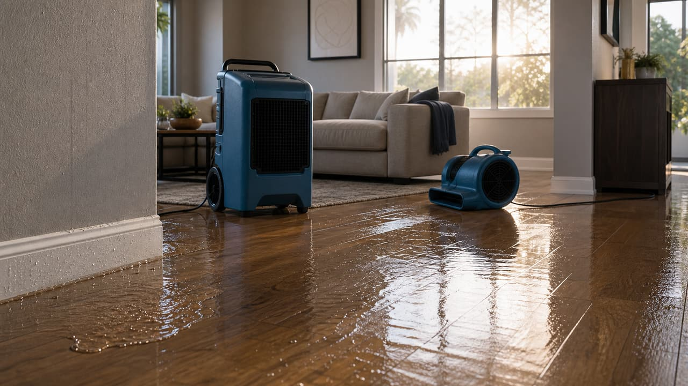
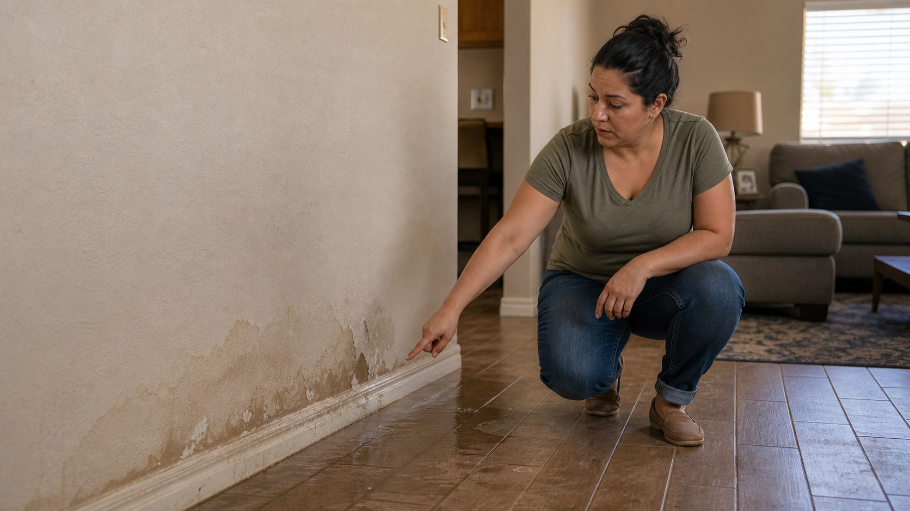
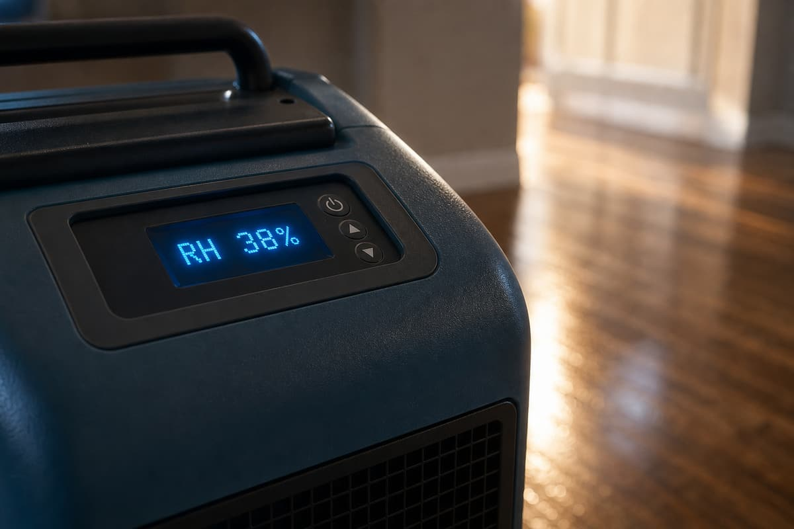
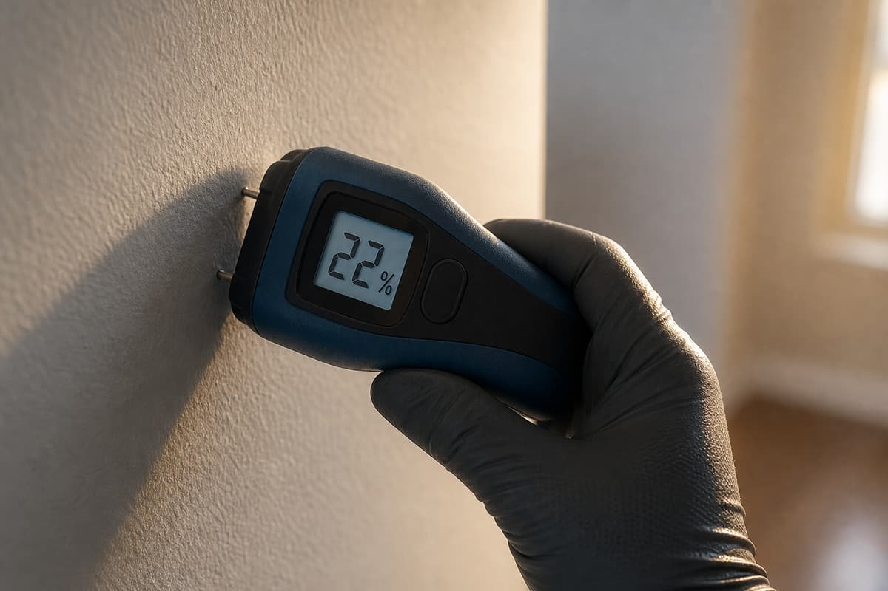
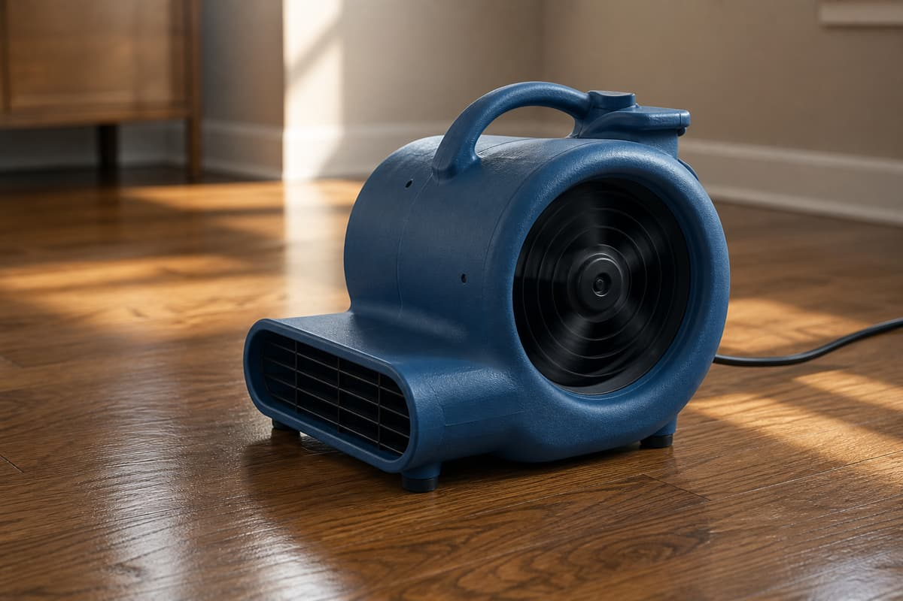
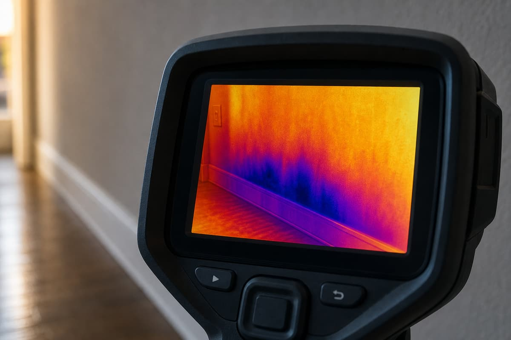
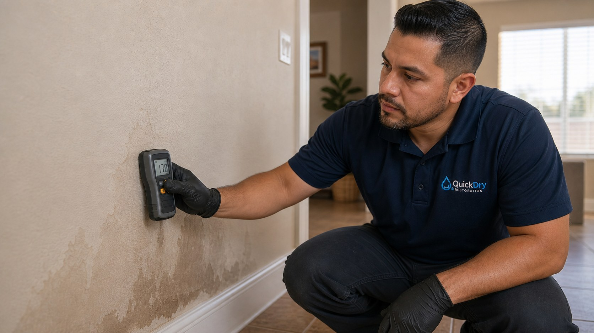
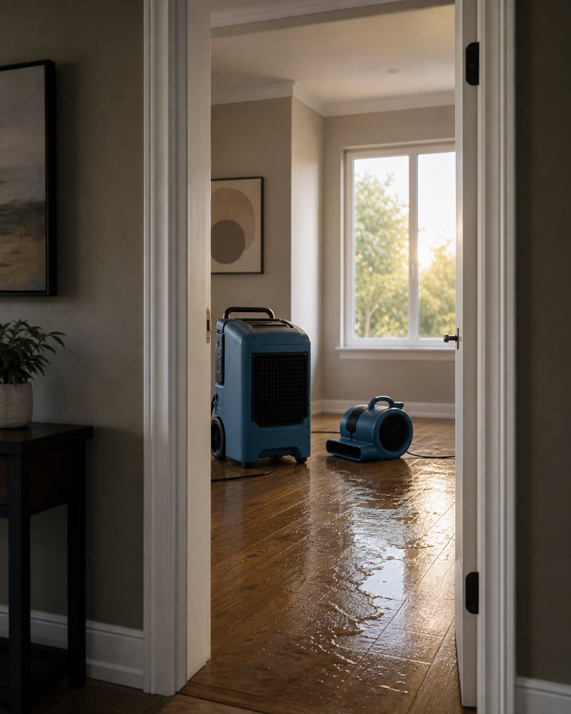
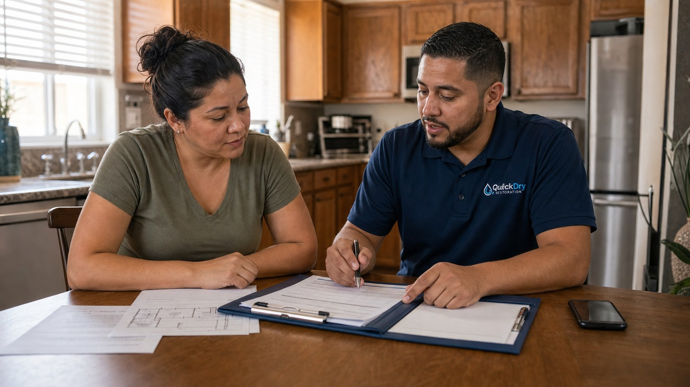
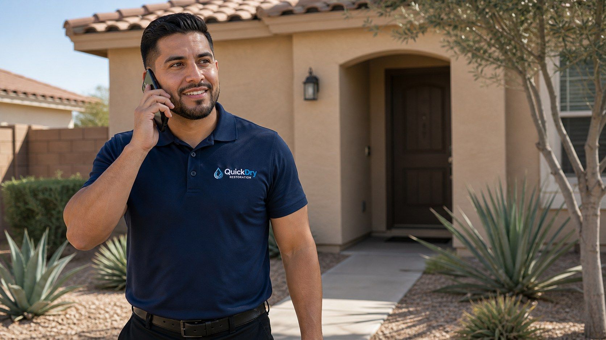

Emergency Water Extraction
Standing water is removed with portable extraction equipment so moisture stops spreading into flooring, walls, and nearby rooms.
Imperial Valley Water Damage Restoration
QuickDry Restoration LLC handles emergency water extraction, structural drying, moisture mapping, and insurance documentation with a calm, technical process.
Services
Water damage creates pressure fast: stop the source, protect materials, document the loss, and keep the claim from becoming a second emergency.

Visible damage is only part of the story. QuickDry checks nearby materials, baseboards, cabinets, and flooring transitions so the drying plan is based on the actual spread of moisture.

Standing water is removed with portable extraction equipment so moisture stops spreading into flooring, walls, and nearby rooms.

LGR dehumidifiers and commercial air movers are placed to move moisture out of materials, not just across the surface.

Thermal imaging, pin meters, and pinless readings help identify moisture behind walls, under flooring, and around baseboards.

Category 1, 2, and 3 water situations are assessed so the drying plan matches the source, contamination risk, and affected materials.

QuickDry coordinates the drying side of a leak or burst pipe event after the plumbing source is isolated or repaired.
Daily moisture logs, photos, equipment records, and Xactimate line-item familiarity help adjusters understand the drying scope.
Equipment & Readings
Professional drying uses airflow, dehumidification, temperature, and moisture content readings together. Daniel, QuickDry's founder-operator, is an IICRC WRT-certified Imperial Valley local who keeps the process technical but understandable.
Designed to pull moisture from the air so wet materials can release trapped water more efficiently.
Used to compare affected materials against drying goals rather than guessing from appearance alone.
Process

You explain what happened, where water is visible, and whether the source is controlled.
Moisture mapping identifies affected areas and helps determine the category of water involved.
Water is extracted when present, then dehumidifiers and air movers are placed for the structure.
Readings are checked over the drying period and equipment is adjusted as materials respond.
You receive job documentation that can support conversations with your insurance adjuster.

Methodology
Air movement and dehumidification are planned around materials, airflow paths, and moisture readings. The goal is a drying setup that is disciplined enough for documentation and practical enough for a real home.
Commercial air movers help move moisture away from wet surfaces and into the air.
Temperature, humidity, and vapor pressure matter because drying is a science, not a fan-only solution.
Moisture Mapping
Walls and floors can look fine while moisture remains behind baseboards or under finished surfaces. Meter readings and thermal imaging help narrow the drying scope with less guesswork.
Insurance & Documentation
QuickDry documents moisture readings, equipment placement, drying progress, and photos so the mitigation record is easier to review.

Se Habla Español
Water damage is stressful enough without language getting in the way. QuickDry can explain the drying plan, documentation, and next steps in English or Spanish.
FAQ
Stop the source if you can do so safely, avoid rooms with electrical hazards, and move small valuables away from the wet area. Then call for mitigation so extraction, drying, and documentation can start quickly.
Coverage depends on your policy, the water source, and how the loss occurred. QuickDry does not decide coverage, but can provide documentation your adjuster may need to review the mitigation work.
Drying time depends on the materials affected, moisture levels, temperature, humidity, and airflow. The process is monitored with readings so equipment is not removed only because a surface looks dry.
Water damage often refers to interior sources such as leaks, supply lines, or appliance failures. Flood damage usually refers to water entering from outside, and it may involve different contamination and insurance considerations.
DIY fans can move air, but they do not measure moisture content, humidity, or drying goals. IICRC WRT training helps guide equipment placement, monitoring, and documentation.

Emergency Response
Call QuickDry Restoration LLC for water extraction, structural drying, and documentation in Imperial Valley.